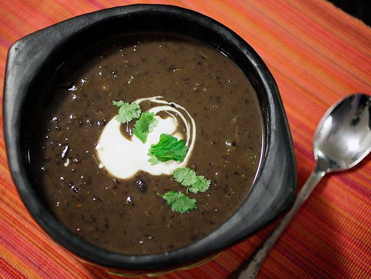

Black Bean Soup

Ingredients
- 1 tablespoon vegetable oil
- 2 green bell peppers, stems and seeds discarded, finely diced
- 1 large onion, finely diced
- 2 cloves garlic, minced on a microplane grater
- 1 jalapeño or serrano pepper, stems and seeds discarded, finely chopped
- 1 teaspoon ground cumin
- 1/2 teaspoon dried chili flakes
- 1 chipotle chili packed in adobo, finely chopped, plus 1 tablespoon adobo sauce from can (optional)
- 1 quart homemade or low-sodium canned chicken broth
- 2 (15-ounce) cans black beans, with liquid
- 2 bay leaves
- Kosher salt
Directions
- Heat vegetable oil in a large saucepan over medium-high heat until shimmering. Add peppers and onions and cook, stirring frequently, until softened but not browned, about 3 minutes. Add garlic, jalapeño, cumin, and dried chili flakes and cook, stirring constantly until fragrant, about 1 minute. Add chipotle and adobo sauce (if using) and stir to combine. Add chicken broth, beans and their liquid, and bay leaves. Increase heat to high, and bring to a boil. Reduce to a bare simmer, cover and cook for 15 minutes.
- Discard the bay leaves. Use a hand blender to roughly puree part of the beans until desired consistency is reached. Alternatively, transfer 2 cups of soup to a blender or food processor and process until smooth (start on low speed and increase to high to prevent blender blow-out). Return to the soup and stir to combine. Season to taste with salt.
- Ladle soup into individual serving bowls and serve immediately with cilantro leaves, sour cream, diced avocado, and diced red onion (as desired).